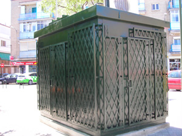

Villaverde Estación 17
Estación

Ubicación
Dirección: C/ Juan Peñalver
Longitud: 3° 42' 47,98" W
Latitud: 40° 20' 49,56" N
Altitud: 601m
Código: 28079017
Datos:
Contaminantes Medidos
Monóxido de Nitrógeno (NO): μg/m3 medido por
Dióxido de Nitrógeno (NO2): μg/m3 medido por
Óxidos de Nitrógeno totales (NOx): μg/m3 medido por
Ozono (O3): μg/m3 medido por
Parámetros Meteorológicos
Temperatura Mínima (TMI): °C medido por
Otras Estaciones:
Datos e Imágenes: